3.1.44 HCM requests
Click this button to open HCM requests tool. This is the main component used for HCM calculations. Main functionality: - To list and process all the incoming and outgoing coordination requests - Create new incoming coordination request - Create outgoing coordination request
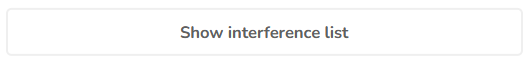
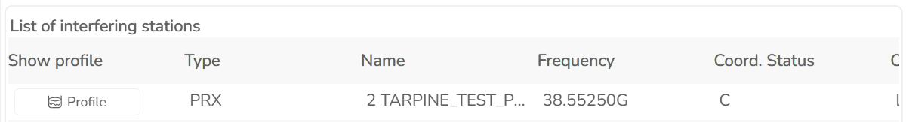

3.1.44.1 List coordination requests Own requests This lists all outgoing coordination requests (sent to other countries). Starts the process of creating a new outgoing request The list of Own requests contains following parameters: - Destination country - File contents code (from file header)
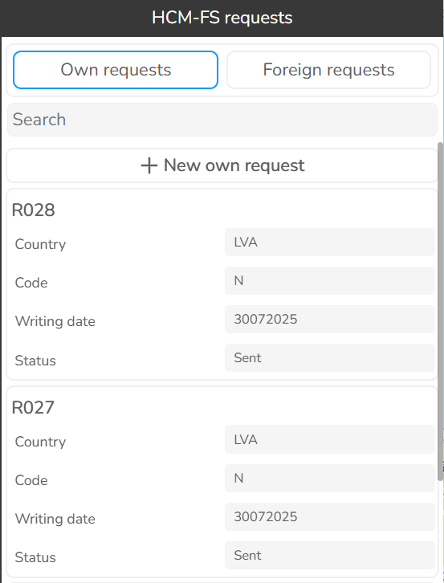
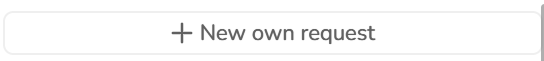
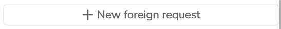
- Date of coordination request (from file header) - You assigned reference number (used for your convenience) - Status of coordination request Foreign requests This lists all incoming coordination requests (received from other countries). Starts the process of importing a new incoming request The list of Foreign requests contains following parameters: - Country of the origin - File contents code (from file header) - Date of coordination request (from file header) - You assigned reference number (used for your convenience) - Status of coordination request Each coordination request contains detailed information about the request and/or the answer.| Parameter | Description |
|---|---|
| Country from | Country of origin |
| Country to | Destination country |
| Registration number | Your assigned registration number used for your convenience (optional) |
| Registration date | Your date of registration of the coordination request, used for your convenience (optional) |
| Responsible person | Name of the responsible person (from HCM request file header) |
| Phone | Phone number from HCM request file header |
| Telefax | Telefax number from HCM request file header |
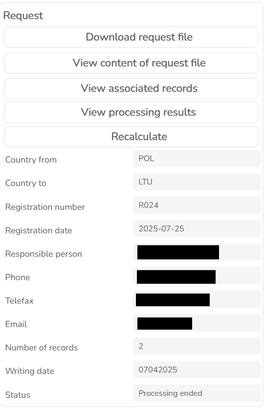
| Parameter | Description |
|---|---|
| Email from HCM request file header | |
| Number of records | Number of records from HCM request file header |
| Writing date | Writing date from HCM request file header |
| Status | |
| Current status of the coordination request. Different statuses are available: | |
| - Processing. | |
| - Processing ended. | |
| - Processing error. This shows that processing resulted in error. | |
| - Ready to send. This shows that outgoing request is ready to be sent. Usually, user may need to enter | |
| additional parameters required for coordination request or edit defaults before finishing coordination | |
| request. | |
| - Finished | |
| Each request contains a toolbar of the following tools: | |
| - Download request file. downloads original coordination request file. | |
| - View request file. Shows content of the original request file. | |
| - View associated records. Shows current records associated with the request file. Usually, when | |
| incoming request is processed, all records are imported into the internal database but with time | |
| they may be deleted by another request, or changed. The same is valid for the records of outgoing | |
| requests – they may later be changed or deleted. This functionality shows current parameters of | |
| the imported (or exported) data. | |
| - View processing results. Opens calculation results that have been performed for the selected | |
| coordination request. | |
| - Recalculate. Restarts calculations for the selected coordination request. | |
| Answer to coordination request contains the same parameters as the request. | |
| 3.1.44.2 Create new incoming coordination request | |
| New incoming (foreign) coordination request is created by clicking New foreign request in HCM requests. | |
| Initially this displays area where received coordination file can be dropped. | |
| When coordination file is loaded map displays the records of the file with additional information, such as |
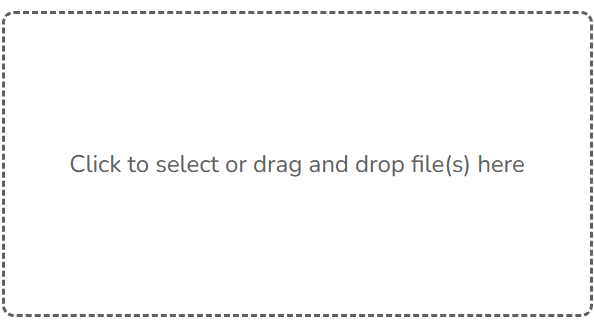
content of HCM file header, registration data, and Trigger options.Your data | Parameter | Description | |---|---| | Calculation Name | Name of the calculation that will be displayed in Prediction history. | | Registration Number | You can assign registration number for the coordination request. Optional. | | Registration Date | You can assign here registration date for the coordination request. Optional. |
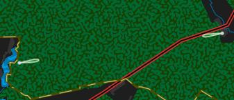
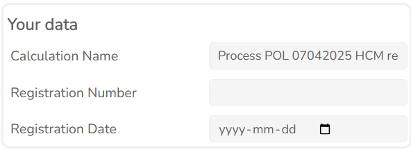
File content section contains header information of the file as it is defined in Annex 2B of HCM- Agreement. Trigger options | Parameter | Description | |---|---| | Limit TD | If enabled, calculation case is logged into the report only if threshold degradation is greater than defined. | | TD, dB > | Value of threshold degradation used as a trigger for logging calculation case into the report. | | Limit Interference | If enabled, calculation case is logged into the report only if interference level is greater than defined. Can be used along with TD limit. | | Interference level, dBW | Value of interference level used as a trigger for logging calculation case into the report. | | Distance PTX to RX [km] | Distance between passive transmitter and receiver. In the case of passive receiver, calculation will be |
performed only if distance between passive transmitter and receiver is less than defined. Decision whether to include this calculation into the report will additionally depend on the rest of Trigger options. Please note that all calculation cases resulted in errors will be logged into the report regardless of Trigger options. For file with contents code N, following steps are performed: - Coordination reference data of submitted HCM records are tested to make sure that no records with such references already exist in the database. - New record of coordination request is created and all HCM records of the request file are imported into the database. - Own records are selected that fulfill following conditions: have coordination status C, D, E, F, G, H, P received by the administration which new entries are tested against. - Calculations are performed: new coordination request data against selected own HCM records, taking into account Trigger options. For file with contents code A, the following steps are performed: - New coordination request record (answer) is created. - Appropriate HCM records in the database are updated (that match coordination reference). Only following parameters are updated: coordination status, date of achieving coordination, and remarks. For file with contents code D, the following steps are performed: - Received HCM records are tested to contain coordination statuses W and R only. - Search for records in the database that have the same coordination reference. - Delete found records in the database. - Create new coordination request record (answer). For file with contents code O, the following steps are performed: - New coordination request record is created. - Own records for the database are selected that have coordination following status with the country of the coordination request: C, E, F, G, H, P - File content is compared against the selected records and comparison report is created. 3.1.44.3 Display processing results View processing results displays calculations performed on an incoming request file of type N or O. File containing new entries (N)
| Parameter | Description |
|---|---|
| Type | Type of station of the test record |
| Name | Name of station of the test record |
| Frequency | Combines frequency and frequency unit of the test record |
| Reference | Coordination reference of the test record |
| Original status | Status of coordination of the test record |
| Max TD | |
| Maximum threshold degradation. In case of test TX record, it shows maximum threshold degradation | |
| cause by the transmitter to a receiver of the reference file. In case of test RX record, it shows threshold |
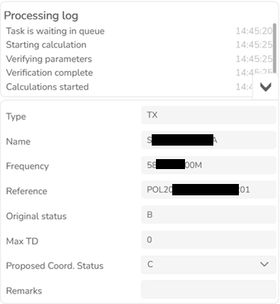
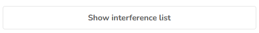
degradation of this particular receiver. For PTX or PRX test record, it shows maximum threshold degradation of either test or reference receiver. Proposed Coord. Status If Max TD is lower than 1 dB and original coordination status is B, software automatically sets proposed coordination status to C. This value will be inserted into the answer file. Remarks User can write separate remarks for each HCM record. This information will be added to the answer file.Shows list of calculated stations against particulat test record. Profile and calculation values are extracted from HCM calculation report file. File containing overall list (O) Differences in records Shows records that have at least one different parameter value. By clicking on the record, detailed comparison widget is displayed:
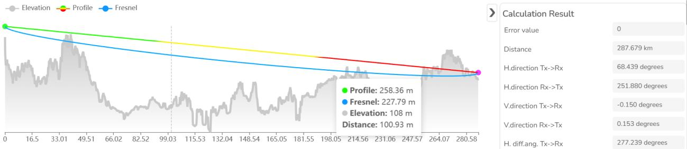
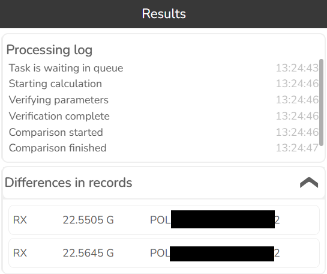
| Parameter | Description |
|---|---|
| Parameter name | Name of the parameter defined in Annex 2B of HCM-Agreement. |
| Database value | Value of the record stored in the database. |
| Received value | Value of the record in the received request file. |
| Error | Contains error message if error occurs while processing the record. |
| Download report as CSV file | Downloads report containing all the records of this section |
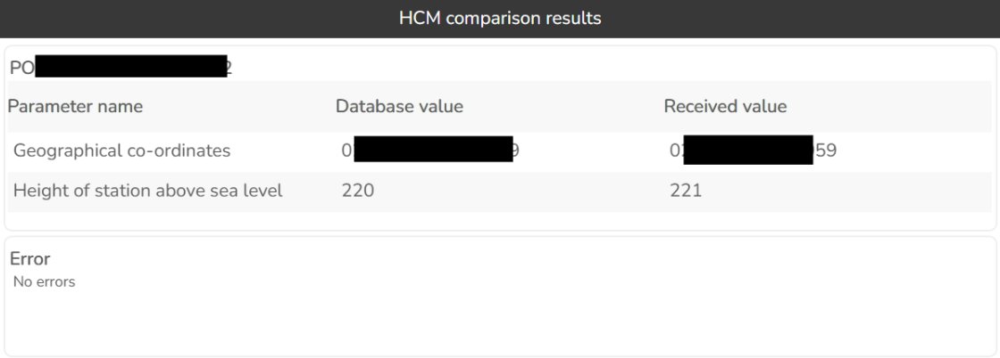
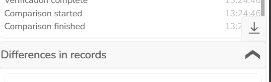
Section “Missing in database” lists all the records that are present in the received file but missing in the
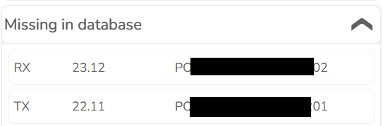
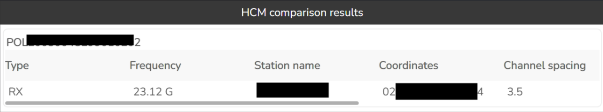
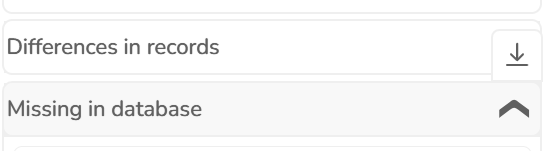
database. By clicking on the record, a detailed comparison widget is displayed with a few additional parameters of the record: Download report as CSV file Downloads report containing all the records of this sectionSection “Missing in received list” displays all the records that are present in the database but missing in the received file. By clicking on the record, a detailed comparison widget is displayed with a few additional
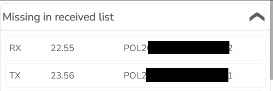
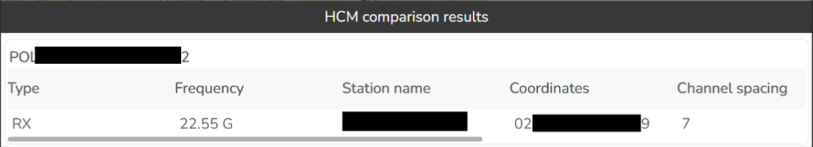
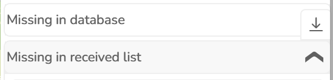
parameters of the record: Download report as CSV file Downloads report containing all the records of this section 3.1.44.4 Create new outgoing coordination request New outgoing (own) coordination request is created by clicking New own request (in HCM requests). This opens a new widget:Request type N For new coordination request (New entries) user must select at least one link that is going to be sent for
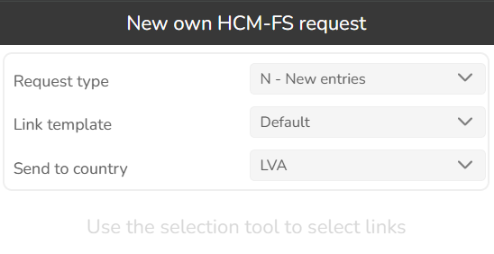
coordination to a country set under “Send to country” and link template, in case one is used. By clicking Create button new outgoing coordination request is created and displayed in the list of Own requests, containing status “Ready to send”. The request contains entries of selected link, converted to HCM Annex 2B format. HCM entries are stored in the database. Request type D This creates coordination request containing a list of deleted HCM records. The records to be deleted must be selected by the user. If the selected HCM records have been coordinated by different administrations, several coordination requests will be created. Request type O This creates a coordination request containing an overall list of coordinated HCM records with the defined target country. Only records with coordination status C, E, F, G, H, and P will be included. Created coordination request| Parameter | Description |
|---|---|
| Country from | Country of origin. It is defined in the settings of the user. |
| Country to | Target country, to which coordination request is to be sent. |
| Registration number | Optional identification of the coordination request. |
| Registration date | Optional registration date of the request. |
| Responsible person | Name, as defined in Annex 2B of HCM-Agreement. This field is automatically filled with information from user settings. |
| Phone | Phone number, as defined in Annex 2B of HCM-Agreement. This field is automatically filled with information from user settings. |
| information from user settings. |
| Parameter | Description |
|---|---|
| Telefax | Telefax number, as defined in Annex 2B of HCM-Agreement. There is no such parameter in the user settings therefore it is not filled in automatically. |
| Email, as defined in Annex 2B of HCM-Agreement. This field is automatically filled with information from user settings. | |
| Number of records | Defined in Annex 2B of HCM-Agreement. This field is automatically calculated. |
| Writing date | Writing date, as defined in Annex 2B of HCM-Agreement. Date of the creation of coordination request is automatically written to this field. |
| Status | Status of coordination request |
| Send email | |
| If enabled, email is automatically sent to the contact person of the target country. For this to work, the | |
| following conditions have to be fulfilled: | |
| - SMTP server defined in Express settings. | |
| - Email of the contact person of the target country set in the table hcm_countries. | |
| If this option is not enabled, coordination request file is prepared but not sent automatically. User must | |
| send it manually. | |
| Finish | |
| It updates coordination request with the data and creates content of Annex 2B data exchange file. If | |
| “Send email” is enabled, coordination request is automatically sent to the target administration, otherwise |
prepared Annex 2B exchange file can be downloaded using “Download request file” and sent manually by the user.